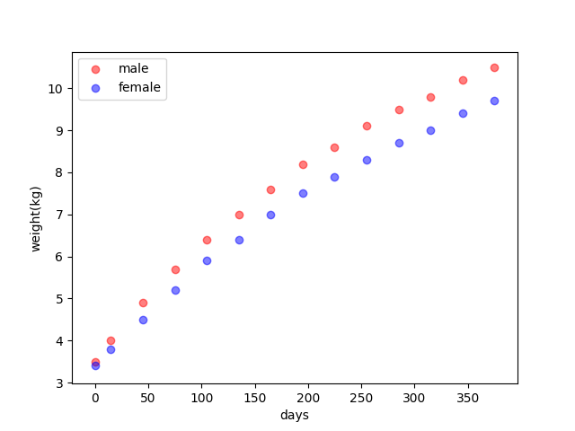
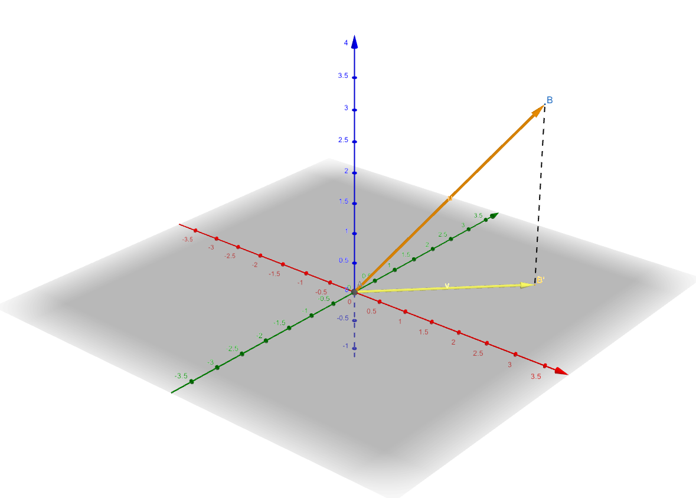

Least Squares Estimation
Keywords: least squares estimation
Squares of the difference between the output of a predictor and the target are wildly used loss function especially in regression problems:
\[ \ell(\hat{\boldsymbol{y}}_i,\boldsymbol{y}_i)=(\hat{\boldsymbol{y}}_i-\boldsymbol{y}_i)^T(\hat{\boldsymbol{y}}_i-\boldsymbol{y}_i) \tag{1} \]
Linear Regression1
Linear regression is a good problem to begin our machine learning career. Not only because of its easiest form and logic but also it's a good basis from which we can extend to other more complicated methods like nonlinear regression and kernel functions. Linear regression has been used for more than 200 years and it is still a good model to solve new problems we might come across nowadays.
Its form is: \[ y=\boldsymbol{w}^T\boldsymbol{x}+\boldsymbol{b}\tag{2} \]
where the vectors \(\boldsymbol{x}\) , the number \(y\) are input and output respectively, \(\boldsymbol{w}\), \(\boldsymbol{b}\) are the parameter vectors of the model.
From a general view to a machine learning problem, the parameters can be viewed as two different objects:
- An unknown constant
- A random variable
Thie first opinion comes from the frequentist statistics, while the second one is the basis of Bayesian statistician.
What we do in this post is estimating the parameters by least-squares methods. And the data we used here is the weights of a newborn baby by days from WHO:
| Day | Male(kg) | Female(kg) |
|---|---|---|
| 0 | 3.5 | 3.4 |
| 15 | 4.0 | 3.8 |
| 45 | 4.9 | 4.5 |
| 75 | 5.7 | 5.2 |
| 105 | 6.4 | 5.9 |
| 135 | 7.0 | 6.4 |
| 165 | 7.6 | 7.0 |
| 195 | 8.2 | 7.5 |
| 225 | 8.6 | 7.9 |
| 255 | 9.1 | 8.3 |
| 285 | 9.5 | 8.7 |
| 315 | 9.8 | 9.0 |
| 345 | 10.2 | 9.4 |
| 375 | 10.5 | 9.7 |

View of algebra
Our task is predicting the weights of a newborn baby on a certain day after his birth. From equation (1), (2) and the task, we can get the error of the \(i\)th training point:
\[ e_i=(y_i-wx_i-b)^2\tag{3} \]
where \(y_i\) is the target according to the \(i\)th input \(x_i\) from the training set. In our task, the output and target are a real number.
Then the total error(Notation: loss function is a function of one pair of input and target), sum of squares of the whole training set become:
\[ e_{\text{total}} = \sum_i(y_i-wx_i-b)^2\tag{4} \]
Our mission now is to minimize equation (4). Be careful: in the training phase, the unknown variables in equation (4) are \(w\) and \(b\). Because it is a quadric function, so there exists one and only one minimum point. And the necessary condition of the minimum points is:
Its gradient should be equal to \(0\)
Assuming we have \(N\) training points in the sample, so we can calculate its gradient \(\begin{bmatrix}\frac{\partial e_{\text{total}}}{\partial b} \\ \frac{\partial e_{\text{total}}}{\partial w} \end{bmatrix}\):
\[ \begin{aligned} \frac{\partial e_{\text{total}}}{\partial b} &= \sum_i^N (2b-2(y_i-wx_i))\\ &=2Nb-2\sum_i^N y_i+2w\sum_i^Nx_i \end{aligned}\tag{5} \]
and the second component:
\[ \begin{aligned} \frac{\partial e_{\text{total}}}{\partial w}&= \sum_i^N (2 x_i^2w-2(y_i-b)x_i)\\ &=2w\sum_i^Nx_i^2-2\sum_i^Nx_iy_i+2b\sum_i^Nx_i \end{aligned}\tag{6} \]
we combine them and set both of them to 0: \[ \begin{aligned} Nb-\sum_i^N y_i+w\sum_i^Nx_i&=0\\ w\sum_i^Nx_i^2-\sum_i^Nx_iy_i+b\sum_i^Nx_i&=0 \end{aligned}\tag{7} \]
to solve these complex equations, we use a little trick here. Summations of \(x_i\) , \(y_i\), \(x_i^2\) and \(x_iy_i\) is the obstacle in front of us. We prefer multiplications to summations in equations. So we would like to substitute the summation with multiplications. We have
\[ N\bar{x}=\sum_i^N x_i\tag{8} \]
and
\[ N\bar{y}=\sum_i^N y_i\tag{9} \]
then we substitute equation (8) and (9) into equation (7) we get:
\[ b=\bar{y}-w\bar{x}\tag{10} \]
for the first part in equation (7). And substitute equation (10) to the second part in equation (7):
\[ \begin{aligned} w\sum_i^Nx_i^2-\sum_i^Nx_iy_i+(\bar{y}-w\bar{x})\sum_i^Nx_i&=0\\ w\sum_i^Nx_i^2-\sum_i^Nx_iy_i+\sum_i^Nx_i\bar{y}-w\sum_i^N\bar{x}x_i&=0\\ (w\sum_i^Nx_i^2-w\sum_i^N\bar{x}x_i)-(\sum_i^Nx_iy_i-\sum_i^Nx_i\bar{y})&=0\\ w\sum_i^Nx_i(x_i-\bar{x})-\sum_i^Nx_i(y_i-\bar{y})&=0\\ w&=\frac{\sum_i^Nx_i(y_i-\bar{y})}{\sum_i^Nx_i(x_i-\bar{x})} \end{aligned}\tag{11} \]
The result of equation (11) can also be written as
\[ w=\frac{\sum_i^N(x_i-\bar{x})(y_i-\bar{y})}{\sum_i^N(x_i-\bar{x})^2}\tag{12} \]
such as in the book 'An introduction to statistical learning'2. They are equivalent because if we do a little change in the third step of equation (11), it's gonna be like:
\[ \begin{aligned} (w\sum_i^Nx_i^2-w\sum_i^N\bar{x}x_i-w\sum_i^N\bar{x}x_i+w\sum_i^N\bar{x}^2)&-\\(\sum_i^Nx_iy_i-\sum_i^Nx_i\bar{y}-\sum_i^N\bar{x}y_i+\sum_i^N\bar{x}\bar{y})&=0\\ w\sum_i^N(x_i-\bar{x})(x_i-\bar{x})&-\\ \sum_i^N(x_i-\bar{x})(y_i-\bar{y})&=0\\ w&=\frac{\sum_i^N(x_i-\bar{x})(y_i-\bar{y})}{\sum_i^N(x_i-\bar{x})^2} \end{aligned}\tag{13} \]
for
\[ w\sum_i^N\bar{x}x_i=w\sum_i^N\bar{x}^2\tag{14} \]
and \[ \sum_i^N\bar{x}y_i=\sum_i^N\bar{x}\bar{y}\tag{15} \]
Code of Linear Regression (Algebra Form)
1 | import pandas as pds |
And its plot is like: 
whose weight is \(0.018442166\) and the intercept is \(4.160650577\).
View of Geometric
To such a simple example with just two parameters above, the calculation of parameter could mess us up. However, the practical task always has more parameters, say hundreds or even thousand parameters. It seems impossible for us to solve that.
Now let's review the linear relation in equation (2) and when we have a training sample consisted of \(m\) points : \[ \{(\boldsymbol{x}_1,y_1),(\boldsymbol{x}_2,y_2),\dots,(\boldsymbol{x}_m,y_m)\}\tag{16} \]
and they are under the same linear relation. Then they can be combined as:
\[ \begin{bmatrix} y_1\\ y_2\\ \vdots\\ y_m \end{bmatrix}=\begin{bmatrix} -&\boldsymbol{x}_1^T&-\\ -&\boldsymbol{x}_2^T&-\\ &\vdots&\\ -&\boldsymbol{x}_m^T&- \end{bmatrix}\boldsymbol{w}+I_m\boldsymbol{b}\tag{17} \]
where \(I_m\) is an identical matirx whose column and row is \(m\) and \(\boldsymbol{b}\) is \(b\) repeating \(m\) times. To make the equation shorter and easy to operate, we can put \(b\) into the vectore \(\boldsymbol{w}\) like:
\[ \begin{bmatrix} y_1\\ y_2\\ \vdots\\ y_m \end{bmatrix}=\begin{bmatrix} 1&-&\boldsymbol{x}_1^T&-\\ 1&-&\boldsymbol{x}_2^T&-\\ 1&&\vdots&\\ 1&-&\boldsymbol{x}_m^T&- \end{bmatrix} \begin{bmatrix} b\\ \boldsymbol{w} \end{bmatrix} \tag{18} \]
We use a simplified equation to represent the relation in equation 18: \[ \boldsymbol{y} = X\boldsymbol{w}\tag{19} \]
From the linear algebra points, equation 19 represents that \(\boldsymbol{y}\) is in the column space of \(X\). This is corresponding to the phenomena that all the points of the set (16) stand in a line. When the points are not in a line, the equation (19) does not hold and what we need to do is find a vector \(\boldsymbol{\hat{y}}\) in the column space which is the closest one to the vector \(\boldsymbol{y}\):
\[ \argmin_{\boldsymbol{\hat{y}}=X\boldsymbol{w}} ||\boldsymbol{y}-\boldsymbol{\hat{y}}||\tag{20} \]
And as we have known, the projection of \(\boldsymbol{y}\) to the column space of \(X\) has the shortest distance to \(\boldsymbol{y}\)

Our mission now is to find \(\boldsymbol{w}\) to make:
\[ \boldsymbol{\hat{y}} = X\boldsymbol{w}\tag{21} \]
where \(\boldsymbol{\hat{y}}\) is the projection of \(\boldsymbol{y}\) in the column space of \(X\).
According to the projection equation in linear algebra:
\[ \boldsymbol{\hat{y}}=X(X^TX)^{-1}X^T\boldsymbol{y}\tag{22} \]
Then substitute equation (21) into equation (22) and assuming \((X^TX)^{-1}\) exists:
\[ \begin{aligned} X\boldsymbol{w}&=X(X^TX)^{-1}X^T\boldsymbol{y}\\ X^TX\boldsymbol{w}&=X^TX(X^TX)^{-1}X^T\boldsymbol{y}\\ X^TX\boldsymbol{w}&=X^T\boldsymbol{y}\\ \boldsymbol{w}&=(X^TX)^{-1}X^T\boldsymbol{y} \end{aligned}\tag{23} \]
To a thin and tall matrix, \(X\) which means here the number of sample points in the sample is far more than the dimension of a sample point, \((X^TX)^{-1}\) exists.
Code of Linear Regression (Matrix Form)
1 | import pandas as pds |
the entire project can be found at: https://github.com/Tony-Tan/ML and please star me.
Its output is also like: